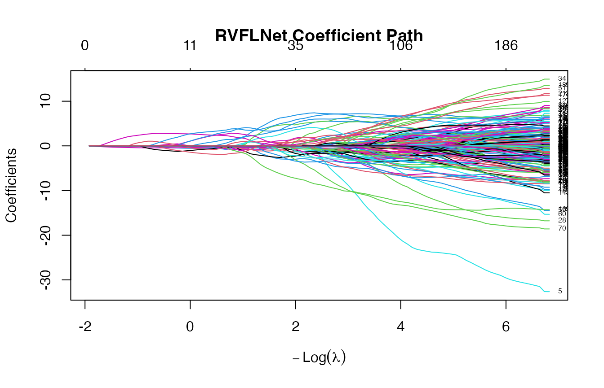
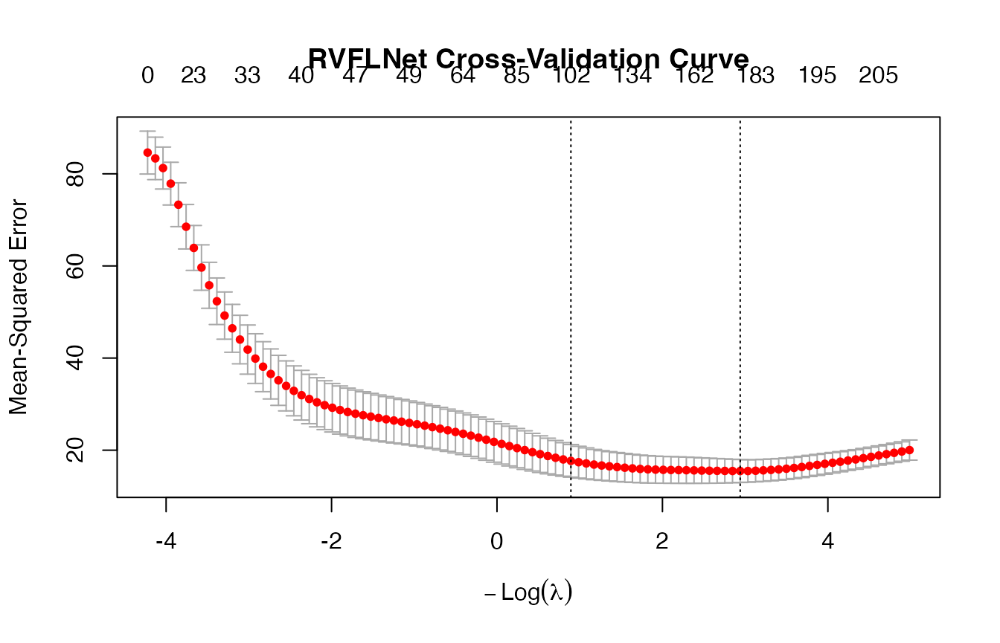
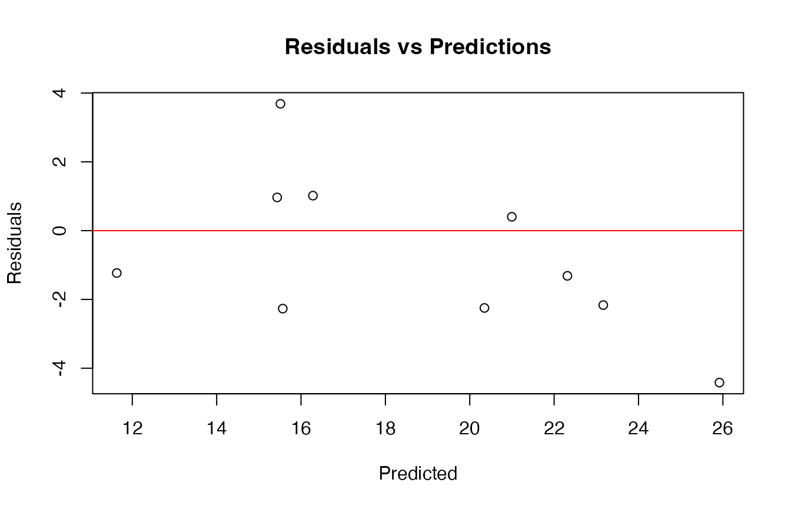
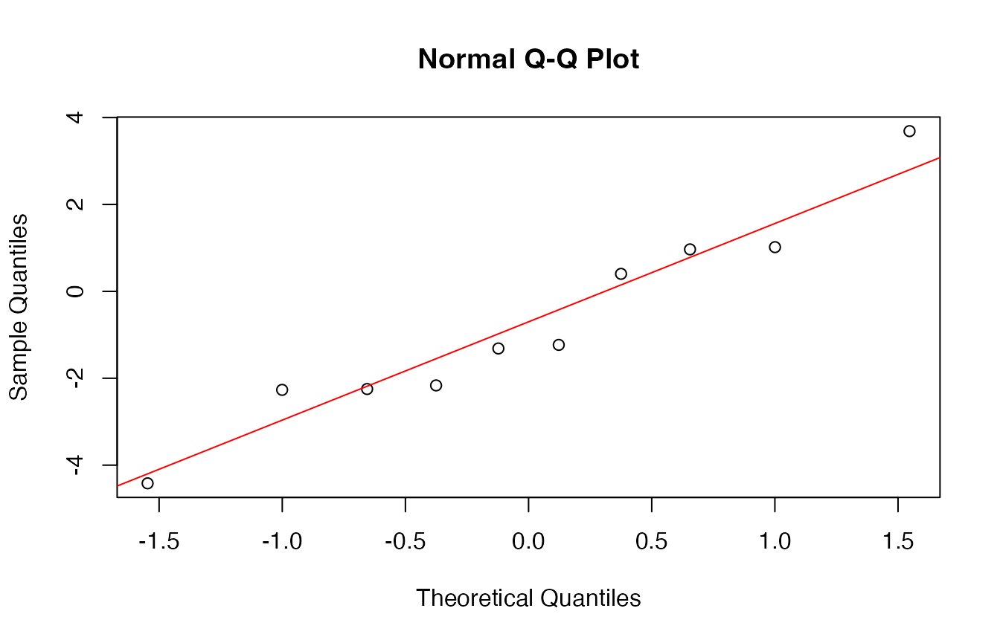

rvflnet.Rmd## Loading required package: Matrix## Loaded glmnet 4.1-10Boston data set
set.seed(123)
# -------------------------
# Data
# -------------------------
X <- as.matrix(MASS::Boston[, -14]) # predictors
y <- MASS::Boston$medv # response
# Train/test split
n <- nrow(X)
idx <- sample(1:n, size = round(0.8 * n))
X_train <- X[idx, ]
y_train <- y[idx]
X_test <- X[-idx, ]
y_test <- y[-idx]
# -------------------------
# Fit model (No CV)
# -------------------------
fit <- rvflnet(X_train, y_train,
n_hidden = 200,
activation = "sigmoid",
W_type = "gaussian")
plot(fit)
print(fit)##
## ========================================
## RVFLNet Model (glmnet backend)
## ========================================
## Call: rvflnet(x = X_train, y = y_train, n_hidden = 200, activation = "sigmoid", W_type = "gaussian")
## Input features: 13
## Hidden units: 200
## Total features: 213
## Activation: sigmoid
## Weight distribution: gaussian
## Seed: 1
## Input scaling: Yes
## Include original features: TRUE
## Family: gaussian
## Non-zero coefficients (min lambda): 201
## ========================================## 6 x 3 sparse Matrix of class "dgCMatrix"
## s=0.10 s=0.05 s=0.01
## (Intercept) 32.7058947 50.810289 43.99161364
## crim . . 0.15054149
## zn . . .
## indus . . -0.08164812
## chas . . -0.13233795
## nox -0.1479769 -8.748572 -23.79594614## 6 x 3 sparse Matrix of class "dgCMatrix"
## s=0.10 s=0.05 s=0.01
## H195 . . .
## H196 . . .
## H197 . . .
## H198 . . .
## H199 . . -0.8183077
## H200 0.4654941 2.169695 6.0771916## s=0.05 s=0.03 s=0.01
## 1 28.78165 28.12491 25.65727
## 15 18.30785 18.59386 19.00496
## 17 18.94427 19.40582 19.50233
## 19 13.40825 13.04073 13.49051
## 28 13.10162 13.73416 14.60465
## 37 22.92770 22.74231 22.39807## s=0.05 s=0.03 s=0.01
## 3.441028 3.235019 2.937008
# -------------------------
# Fit model (CV)
# -------------------------
cv_model <- cv.rvflnet(
X_train, y_train,
n_hidden = 200,
activation = "sigmoid",
W_type = "gaussian",
alpha = 0.1, # elastic net mix
nfolds = 5
)
print(cv_model)##
## ========================================
## Cross-Validated RVFLNet Model
## ========================================
## Call: cv.rvflnet(x = X_train, y = y_train, n_hidden = 200, activation = "sigmoid", W_type = "gaussian", alpha = 0.1, nfolds = 5)
## Input features: 13
## Hidden units: 200
## Total features: 213
## Activation: sigmoid
## Weight distribution: gaussian
## Seed: 1
## Input scaling: Yes
## Include original features: TRUE
## Family: gaussian
##
## Cross-validation summary:
## ------------------------
## lambda.min: 0.0529 (min CV error)
## lambda.1se: 0.4093 (1se rule)
## Non-zero coefficients at lambda.min: 182
## Non-zero coefficients at lambda.1se: 102
## ========================================
plot(cv_model)
print(cv_model$cvfit$lambda.min)## [1] 0.05286098## List of 14
## $ cvfit :List of 12
## ..$ lambda : num [1:100] 68.3 62.2 56.7 51.6 47.1 ...
## ..$ cvm : num [1:100] 84.6 83.3 81.3 77.9 73.3 ...
## ..$ cvsd : num [1:100] 4.66 4.61 4.55 4.64 4.76 ...
## ..$ cvup : num [1:100] 89.3 88 85.8 82.5 78 ...
## ..$ cvlo : num [1:100] 80 78.7 76.7 73.2 68.5 ...
## ..$ nzero : Named int [1:100] 0 2 2 9 16 18 23 24 24 29 ...
## .. ..- attr(*, "names")= chr [1:100] "s0" "s1" "s2" "s3" ...
## ..$ call : language glmnet::cv.glmnet(x = Z, y = y, nfolds = 5, family = family, alpha = 0.1)
## ..$ name : Named chr "Mean-Squared Error"
## .. ..- attr(*, "names")= chr "mse"
## ..$ glmnet.fit:List of 12
## .. ..$ a0 : Named num [1:100] 22.5 22.6 22 21.8 21.4 ...
## .. .. ..- attr(*, "names")= chr [1:100] "s0" "s1" "s2" "s3" ...
## .. ..$ beta :Formal class 'dgCMatrix' [package "Matrix"] with 6 slots
## .. .. .. ..@ i : int [1:10255] 5 12 5 12 5 12 19 55 133 149 ...
## .. .. .. ..@ p : int [1:101] 0 0 2 4 13 29 47 70 94 118 ...
## .. .. .. ..@ Dim : int [1:2] 213 100
## .. .. .. ..@ Dimnames:List of 2
## .. .. .. .. ..$ : chr [1:213] "crim" "zn" "indus" "chas" ...
## .. .. .. .. ..$ : chr [1:100] "s0" "s1" "s2" "s3" ...
## .. .. .. ..@ x : num [1:10255] 0.0136 -0.0118 0.1255 -0.0236 0.2204 ...
## .. .. .. ..@ factors : list()
## .. ..$ df : int [1:100] 0 2 2 9 16 18 23 24 24 29 ...
## .. ..$ dim : int [1:2] 213 100
## .. ..$ lambda : num [1:100] 68.3 62.2 56.7 51.6 47.1 ...
## .. ..$ dev.ratio: num [1:100] 0 0.015 0.0397 0.0831 0.1402 ...
## .. ..$ nulldev : num 34112
## .. ..$ npasses : int 3014
## .. ..$ jerr : int 0
## .. ..$ offset : logi FALSE
## .. ..$ call : language glmnet(x = Z, y = y, family = family, alpha = 0.1)
## .. ..$ nobs : int 405
## .. ..- attr(*, "class")= chr [1:2] "elnet" "glmnet"
## ..$ lambda.min: num 0.0529
## ..$ lambda.1se: num 0.409
## ..$ index : int [1:2, 1] 78 56
## .. ..- attr(*, "dimnames")=List of 2
## .. .. ..$ : chr [1:2] "min" "1se"
## .. .. ..$ : chr "Lambda"
## ..- attr(*, "class")= chr "cv.glmnet"
## $ W : num [1:13, 1:200] -0.626 0.184 -0.836 1.595 0.33 ...
## $ center : Named num [1:13] 3.7038 11.8494 11.0576 0.0765 0.5523 ...
## ..- attr(*, "names")= chr [1:13] "crim" "zn" "indus" "chas" ...
## $ scale_vec : Named num [1:13] 9.091 23.509 6.827 0.266 0.115 ...
## ..- attr(*, "names")= chr [1:13] "crim" "zn" "indus" "chas" ...
## $ scaled_input : logi TRUE
## $ activation : chr "sigmoid"
## $ W_type : chr "gaussian"
## $ seed : num 1
## $ n_hidden : num 200
## $ include_original: logi TRUE
## $ p : int 13
## $ family : chr "gaussian"
## $ y : NULL
## $ call : language cv.rvflnet(x = X_train, y = y_train, n_hidden = 200, activation = "sigmoid", W_type = "gaussian", alpha = 0.1, nfolds = 5)
## - attr(*, "class")= chr "cv.rvflnet"
## NULL
# -------------------------
# Predictions
# -------------------------
y_pred <- predict(cv_model, X_test)
# -------------------------
# Diagnostics
# -------------------------
# RMSE
rmse <- sqrt(mean((y_test - y_pred)^2))
cat("Test RMSE:", rmse, "\n")## Test RMSE: 2.944856
# -------------------------
# Sparsity diagnostics
# -------------------------
coef_min <- coef(cv_model, s = "lambda.min")
nonzero <- sum(coef_min[-1, 1] != 0)
cat("Non-zero coefficients:", nonzero, "\n")## Non-zero coefficients: 182
# Optional: inspect how many come from original vs hidden
p <- ncol(X_train)
orig_nz <- sum(coef_min[2:(p+1), 1] != 0)
hidden_nz <- sum(coef_min[(p+2):length(coef_min), 1] != 0)
cat("Original features used:", orig_nz, "\n")## Original features used: 13
cat("Hidden features used:", hidden_nz, "\n")## Hidden features used: 169mtcars data set
set.seed(123)
# -------------------------
# Data
# -------------------------
data(mtcars)
X <- as.matrix(mtcars[, -1]) # predictors
y <- mtcars$mpg # response
# Train/test split
n <- nrow(X)
idx <- sample(1:n, size = round(0.7 * n))
X_train <- X[idx, ]
y_train <- y[idx]
X_test <- X[-idx, ]
y_test <- y[-idx]
# -------------------------
# Fit model (CV)
# -------------------------
cv_model <- cv.rvflnet(
X_train, y_train,
n_hidden = 50,
activation = "tanh",
W_type = "sobol",
alpha = 0.5, # elastic net mix
nfolds = 5
)
print(cv_model)##
## ========================================
## Cross-Validated RVFLNet Model
## ========================================
## Call: cv.rvflnet(x = X_train, y = y_train, n_hidden = 50, activation = "tanh", W_type = "sobol", alpha = 0.5, nfolds = 5)
## Input features: 10
## Hidden units: 50
## Total features: 60
## Activation: tanh
## Weight distribution: sobol
## Seed: 1
## Input scaling: Yes
## Include original features: TRUE
## Family: gaussian
##
## Cross-validation summary:
## ------------------------
## lambda.min: 1.1844 (min CV error)
## lambda.1se: 2.7361 (1se rule)
## Non-zero coefficients at lambda.min: 14
## Non-zero coefficients at lambda.1se: 12
## ========================================
# -------------------------
# Predictions
# -------------------------
(y_pred <- predict(cv_model, X_test))## lambda.min
## Mazda RX4 23.16486
## Mazda RX4 Wag 22.31446
## Hornet 4 Drive 20.99700
## Valiant 20.34780
## Merc 450SE 15.43422
## Merc 450SL 16.28267
## Lincoln Continental 11.63207
## Toyota Corona 25.91846
## Camaro Z28 15.56731
## Pontiac Firebird 15.51211
# -------------------------
# Diagnostics
# -------------------------
# RMSE
rmse <- sqrt(mean((y_test - y_pred)^2))
cat("Test RMSE:", rmse, "\n")## Test RMSE: 2.310393
# R-squared
r2 <- 1 - sum((y_test - y_pred)^2) / sum((y_test - mean(y_test))^2)
cat("Test R^2:", r2, "\n")## Test R^2: 0.5768393
# Residual plot
plot(y_pred, y_test - y_pred,
main = "Residuals vs Predictions",
xlab = "Predicted",
ylab = "Residuals")
abline(h = 0, col = "red")

shapiro.test(y_test - y_pred)##
## Shapiro-Wilk normality test
##
## data: y_test - y_pred
## W = 0.95305, p-value = 0.7047
# -------------------------
# Sparsity diagnostics
# -------------------------
(coef_min <- coef(cv_model, s = "lambda.min"))## 61 x 1 sparse Matrix of class "dgCMatrix"
## lambda.min
## (Intercept) 23.5765429179
## cyl -0.5337018266
## disp -0.0016855389
## hp -0.0005736031
## drat 1.3381501299
## wt -1.4833970316
## qsec .
## vs 0.8265475926
## am 0.0327132634
## gear .
## carb .
## H1 .
## H2 -0.1772888513
## H3 .
## H4 -0.4539984869
## H5 .
## H6 0.0054760046
## H7 .
## H8 .
## H9 .
## H10 .
## H11 .
## H12 .
## H13 .
## H14 .
## H15 .
## H16 .
## H17 .
## H18 .
## H19 .
## H20 .
## H21 .
## H22 .
## H23 .
## H24 .
## H25 .
## H26 .
## H27 .
## H28 .
## H29 -0.9274954853
## H30 .
## H31 .
## H32 .
## H33 -0.7038716722
## H34 .
## H35 -0.0962991954
## H36 .
## H37 -0.4199869874
## H38 .
## H39 .
## H40 .
## H41 .
## H42 .
## H43 .
## H44 .
## H45 .
## H46 .
## H47 .
## H48 .
## H49 .
## H50 .## Non-zero coefficients: 14
# Optional: inspect how many come from original vs hidden
p <- ncol(X_train)
orig_nz <- sum(coef_min[2:(p+1), 1] != 0)
hidden_nz <- sum(coef_min[(p+2):length(coef_min), 1] != 0)
cat("Original features used:", orig_nz, "\n")## Original features used: 7
cat("Hidden features used:", hidden_nz, "\n")## Hidden features used: 7
set.seed(123)
data(iris)
# Binary classification: setosa vs others
y <- ifelse(iris$Species == "setosa", 1, 0)
X <- as.matrix(iris[, 1:4])
# Train/test split
n <- nrow(X)
idx <- sample(1:n, size = round(0.8 * n))
X_train <- X[idx, ]
y_train <- y[idx]
X_test <- X[-idx, ]
y_test <- y[-idx]
# -------------------------
# Fit model
# -------------------------
cv_model <- cv.rvflnet(
X_train, y_train,
n_hidden = 50,
activation = "relu",
W_type = "gaussian",
family = "binomial",
nfolds = 5
)
# -------------------------
# Predictions (probabilities)
# -------------------------
(probs <- predict(cv_model, X_test, type = "response"))## lambda.min
## [1,] 0.9997617002
## [2,] 0.9992267955
## [3,] 0.9997120678
## [4,] 0.9997524867
## [5,] 0.9996600481
## [6,] 0.9992472082
## [7,] 0.9996101744
## [8,] 0.9999356520
## [9,] 0.9998139568
## [10,] 0.9995418762
## [11,] 0.0003328885
## [12,] 0.0003328885
## [13,] 0.0003328885
## [14,] 0.0019937012
## [15,] 0.0003328885
## [16,] 0.0005459970
## [17,] 0.0003328885
## [18,] 0.0005035848
## [19,] 0.0003328885
## [20,] 0.0003328885
## [21,] 0.0003328885
## [22,] 0.0003328885
## [23,] 0.0003328885
## [24,] 0.0003328885
## [25,] 0.0003328885
## [26,] 0.0003328885
## [27,] 0.0003328885
## [28,] 0.0003328885
## [29,] 0.0003328885
## [30,] 0.0003328885
# Convert to class
y_pred <- ifelse(probs > 0.5, 1, 0)
all.equal(as.numeric(y_pred), as.numeric(predict(cv_model, X_test, type="class")))## [1] TRUE
# -------------------------
# Diagnostics
# -------------------------
# Accuracy
acc <- mean(drop(y_pred) == y_test)
cat("Accuracy:", acc, "\n")## Accuracy: 1
# Confusion matrix
table(Predicted = y_pred, Actual = y_test)## Actual
## Predicted 0 1
## 0 20 0
## 1 0 10
# ROC-style diagnostic (simple)
plot(probs, jitter(y_test),
main = "Predicted probabilities vs true labels",
xlab = "Predicted probability",
ylab = "True label")
# Sparsity
(coef_min <- coef(cv_model, s = "lambda.min"))## 55 x 1 sparse Matrix of class "dgCMatrix"
## lambda.min
## (Intercept) -8.00737002
## Sepal.Length .
## Sepal.Width .
## Petal.Length .
## Petal.Width .
## H1 .
## H2 .
## H3 .
## H4 .
## H5 .
## H6 .
## H7 .
## H8 .
## H9 4.93563803
## H10 .
## H11 .
## H12 .
## H13 .
## H14 .
## H15 .
## H16 .
## H17 .
## H18 .
## H19 .
## H20 .
## H21 .
## H22 .
## H23 .
## H24 .
## H25 .
## H26 .
## H27 .
## H28 .
## H29 .
## H30 .
## H31 .
## H32 .
## H33 .
## H34 .
## H35 .
## H36 0.95999955
## H37 .
## H38 .
## H39 .
## H40 .
## H41 .
## H42 .
## H43 .
## H44 .
## H45 .
## H46 0.05947803
## H47 .
## H48 .
## H49 0.16394482
## H50 .## Non-zero coefficients: 4
set.seed(123)
data(iris)
X <- as.matrix(iris[, 1:4])
y <- as.integer(iris$Species) # factor with 3 classes
# Train/test split
n <- nrow(X)
idx <- sample(1:n, size = round(0.8 * n))
X_train <- X[idx, ]
y_train <- y[idx]
X_test <- X[-idx, ]
y_test <- y[-idx]
# -------------------------
# Fit model
# -------------------------
cv_model <- cv.rvflnet(
X_train, y_train,
n_hidden = 60,
activation = "tanh",
W_type = "sobol",
family = "multinomial",
nfolds = 5
)
# -------------------------
# Predictions
# -------------------------
(probs <- predict(cv_model, X_test, type = "response"))## , , lambda.min
##
## 1 2 3
## [1,] 9.982426e-01 1.757448e-03 3.459054e-19
## [2,] 9.932314e-01 6.768590e-03 3.692295e-17
## [3,] 9.979165e-01 2.083541e-03 3.900101e-18
## [4,] 9.982099e-01 1.790113e-03 1.432764e-19
## [5,] 9.979199e-01 2.080148e-03 1.018286e-18
## [6,] 9.961312e-01 3.868773e-03 1.353780e-18
## [7,] 9.973898e-01 2.610184e-03 7.426400e-19
## [8,] 9.996859e-01 3.140579e-04 7.420564e-21
## [9,] 9.975841e-01 2.415874e-03 1.228506e-18
## [10,] 9.976419e-01 2.358056e-03 1.011165e-17
## [11,] 2.242645e-04 9.616819e-01 3.809380e-02
## [12,] 1.238235e-03 9.822014e-01 1.656038e-02
## [13,] 9.888395e-04 9.758578e-01 2.315332e-02
## [14,] 3.704532e-02 9.629517e-01 2.931757e-06
## [15,] 3.937507e-04 9.970431e-01 2.563106e-03
## [16,] 5.404109e-03 9.945865e-01 9.371371e-06
## [17,] 2.844270e-03 9.928376e-01 4.318177e-03
## [18,] 2.037723e-02 9.795792e-01 4.360441e-05
## [19,] 9.372272e-04 9.985428e-01 5.199913e-04
## [20,] 3.624663e-03 9.962681e-01 1.072695e-04
## [21,] 1.062615e-04 9.744471e-01 2.544661e-02
## [22,] 4.463536e-03 9.953878e-01 1.486454e-04
## [23,] 5.914594e-06 7.729005e-02 9.227040e-01
## [24,] 1.482716e-03 9.975321e-01 9.852118e-04
## [25,] 3.552658e-03 9.951492e-01 1.298191e-03
## [26,] 4.980522e-10 8.255886e-05 9.999174e-01
## [27,] 2.572022e-08 2.481971e-03 9.975180e-01
## [28,] 3.331262e-08 1.779771e-03 9.982202e-01
## [29,] 3.806263e-10 5.416406e-04 9.994584e-01
## [30,] 8.189773e-10 1.072764e-04 9.998927e-01
# Convert probabilities to class
#(pred_class <- apply(probs, 1, function(row) colnames(probs)[which.max(row)]))
(pred_class <- predict(cv_model, X_test, type = "class"))## lambda.min
## [1,] "1"
## [2,] "1"
## [3,] "1"
## [4,] "1"
## [5,] "1"
## [6,] "1"
## [7,] "1"
## [8,] "1"
## [9,] "1"
## [10,] "1"
## [11,] "2"
## [12,] "2"
## [13,] "2"
## [14,] "2"
## [15,] "2"
## [16,] "2"
## [17,] "2"
## [18,] "2"
## [19,] "2"
## [20,] "2"
## [21,] "2"
## [22,] "2"
## [23,] "3"
## [24,] "2"
## [25,] "2"
## [26,] "3"
## [27,] "3"
## [28,] "3"
## [29,] "3"
## [30,] "3"
# -------------------------
# Diagnostics
# -------------------------
# Accuracy
acc <- mean(pred_class == y_test)
cat("Accuracy:", acc, "\n")## Accuracy: 0.9666667
# Confusion matrix
table(Predicted = pred_class, Actual = y_test)## Actual
## Predicted 1 2 3
## 1 10 0 0
## 2 0 14 0
## 3 0 1 5
# Sparsity (note: multinomial returns list per class)
(coef_min <- coef(cv_model, s = "lambda.min"))## $`1`
## 65 x 1 sparse Matrix of class "dgCMatrix"
## lambda.min
## (Intercept) 16.512314
## Sepal.Length .
## Sepal.Width 3.251664
## Petal.Length -2.602282
## Petal.Width -1.688998
## H1 .
## H2 .
## H3 .
## H4 .
## H5 .
## H6 .
## H7 .
## H8 .
## H9 .
## H10 .
## H11 .
## H12 .
## H13 .
## H14 .
## H15 .
## H16 .
## H17 .
## H18 .
## H19 .
## H20 .
## H21 .
## H22 .
## H23 .
## H24 .
## H25 .
## H26 .
## H27 .
## H28 .
## H29 .
## H30 .
## H31 .
## H32 .
## H33 .
## H34 .
## H35 .
## H36 .
## H37 .
## H38 .
## H39 .
## H40 .
## H41 .
## H42 .
## H43 .
## H44 .
## H45 .
## H46 .
## H47 .
## H48 .
## H49 .
## H50 .
## H51 .
## H52 .
## H53 .
## H54 .
## H55 .
## H56 .
## H57 .
## H58 .
## H59 .
## H60 .
##
## $`2`
## 65 x 1 sparse Matrix of class "dgCMatrix"
## lambda.min
## (Intercept) 10.624601
## Sepal.Length 1.361845
## Sepal.Width .
## Petal.Length .
## Petal.Width .
## H1 .
## H2 .
## H3 .
## H4 .
## H5 .
## H6 .
## H7 .
## H8 .
## H9 .
## H10 .
## H11 .
## H12 .
## H13 .
## H14 .
## H15 .
## H16 .
## H17 .
## H18 .
## H19 .
## H20 .
## H21 .
## H22 .
## H23 .
## H24 .
## H25 .
## H26 .
## H27 .
## H28 .
## H29 .
## H30 .
## H31 .
## H32 .
## H33 .
## H34 .
## H35 .
## H36 .
## H37 .
## H38 .
## H39 .
## H40 .
## H41 .
## H42 .
## H43 .
## H44 .
## H45 .
## H46 .
## H47 .
## H48 .
## H49 .
## H50 .
## H51 .
## H52 .
## H53 .
## H54 .
## H55 .
## H56 .
## H57 .
## H58 .
## H59 .
## H60 .
##
## $`3`
## 65 x 1 sparse Matrix of class "dgCMatrix"
## lambda.min
## (Intercept) -27.1369151
## Sepal.Length .
## Sepal.Width .
## Petal.Length 6.0134319
## Petal.Width 9.7916675
## H1 .
## H2 .
## H3 .
## H4 .
## H5 .
## H6 .
## H7 0.8319143
## H8 .
## H9 .
## H10 .
## H11 .
## H12 .
## H13 .
## H14 .
## H15 .
## H16 .
## H17 .
## H18 .
## H19 .
## H20 .
## H21 .
## H22 .
## H23 .
## H24 .
## H25 .
## H26 .
## H27 .
## H28 .
## H29 .
## H30 .
## H31 .
## H32 .
## H33 .
## H34 .
## H35 .
## H36 .
## H37 .
## H38 .
## H39 .
## H40 .
## H41 .
## H42 .
## H43 .
## H44 .
## H45 .
## H46 .
## H47 .
## H48 .
## H49 .
## H50 .
## H51 -2.9870762
## H52 .
## H53 .
## H54 .
## H55 .
## H56 .
## H57 .
## H58 .
## H59 .
## H60 .